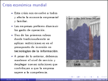
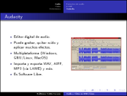
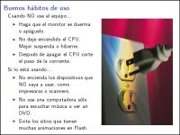
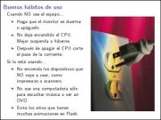

Movimiento Libre
Colección de ideas.
Publicaciones escritas por guivaloz
Revista del Consumidor - La descarga te hará libre
2009-05-09 14:00 - guivaloz
Una muy grata sorpresa es encontrar un artículo dedicado al software gratuito en una revista de circulación nacional. Es en la Revista del Consumidor de Mayo de 2009. En la portada aparece como “Software Gratis que sí te ayuda a ahorrar (y no te convierte en pirata)”.
Escrito por Sara Velázquez, habla a cerca de las desventajas de usar software pirata y que la solución, en estos tiempos de crisis, es recurrir al software gratuito. Ella menciona: “Por lo regular, lo que es gratis suena a que es malo, o que será de menor calidad, pero no siempre es así. Por ejemplo, este artículo fue escrito utilizando OpenOffice 3.0, un paquete gratuito para oficina que no le pide nada al popular Office 2007.”

KDE 4 Reinventando el entorno gráfico
2009-04-21 12:00 - guivaloz


Con motivo del Festival Latinoamericano de Instalación de Software Libre, FLISOL 2009 he elaborado esta presentación sobre el origen y la nueva versión del KDE llamándola KDE 4 - Reinventando el entorno gráfico.
Fuertes e innovadores cambios nos ofrece la versión 4 de este entorno de escritorio e infraestructura de desarrollo para sistemas Unix/Linux. Aunado a ello una gran comunidad de desarrolladores, traductores, diseñadores y promotores han incrementado sus esfuerzos para lograr crear lo mejor de lo mejor para el Software Libre.
Esta presentación está basada en los materiales de Thomas Thym y de Arturo Hoffstadt.
Una de las frases de la nueva campaña de KDE simboliza lo que les digo: “Sé libre de pedir un deseo, y entonces ayuda a que se vuelva realidad”.
Descargar
Software Libre en tiempos de crisis
2009-03-14 16:00 - guivaloz
 

No cabe duda que la crisis mundial, a pesar de los comentarios optimistas de nuestro gobierno, nos envuelve a todos y afecta la economía empresarial y familiar. Es este contexto, uno de los principales rubros donde buscamos reducción de costos es el de las Tecnologías de Información. He aquí una gran oportunidad para usar Software Libre, ya que si no podemos ahorrar en la compra y mantenimiento de hardware, sí lo podemos hacer al dejar de pagar el alto costo de las licencias privativas de software.
Punto aparte del ahorro económico, sabemos que el software es cada vez más el gran intermediario entre la información y la inteligencia humana. De la misma manera que nos preocupa la libertad para poder acceder a la información, nos debe preocupar con igual intensidad quién controla este intermediario y qué garantías tenemos de su transparencia y fiabilidad. El Software Libre, al dar acceso al código, es el único que puede garantizar esta transparencia.
Descargar
Audio y Video en GNU/Linux
2008-10-26 20:45 - guivaloz
 

Con motivo del VI Simposium Nacional de Sistemas Computacionales e Informática (SINASCI) organizado por el Instituto Tecnológico Superior de Lerdo elaboré esta sencilla presentación para mostrar las cualidades de los programas multimedia LAME, Audacity, FFMPEG, MPlayer, Xine y VLC. Todos son Software Libre.
Descargar
Consejos para una Informática Ecológica
2008-05-17 15:30 - guivaloz

 

Ante una nueva era donde hay más conciencia por la conservación del medio ambiente nos vemos en la necesidad de buscar mejores alternativas, más eficientes energéticamente hablando, de nuestros equipos informáticos. Las nuevas tecnologías del Kernel Linux, los fabricantes de equipos de cómputo y los usuarios debemos de hacer esfuerzos por lograr disminuir el consumo de energía en pro de nuestro mundo.